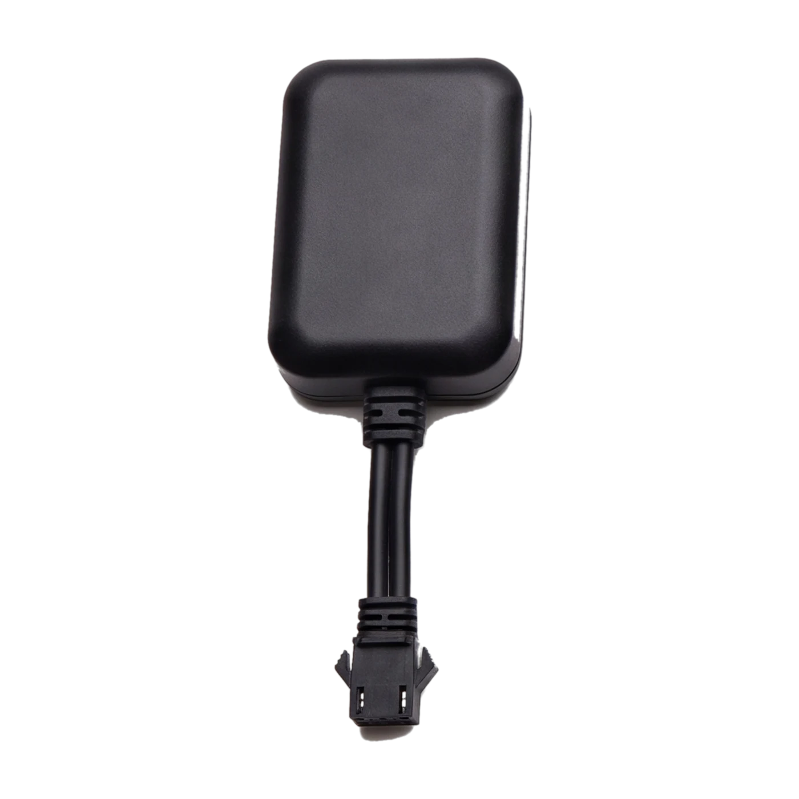

Equipamentos
Equipamentos Rastcar
Mais equipamentos
Ver todos →
Cobertura
Frota
PT
Português
Español
English
עברית
Área do cliente
Plataforma de rastreamento
Acompanhe seu veículo ao vivo
2ª via de boleto
Sicoob
Sicredi
Falar agora
Cobertura
Frota
Ver todos →
Área do cliente
← Início
PT
ES
EN
עב
Falar agora
Localização
Rastreador 4G
Rastreamento 4G. Sem ponto cego.
Pedir orçamento
Ver todos →
Role
Especificações
Tudo dedicado a este equipamento
Pedir orçamento
← Ver todos os equipamentos
